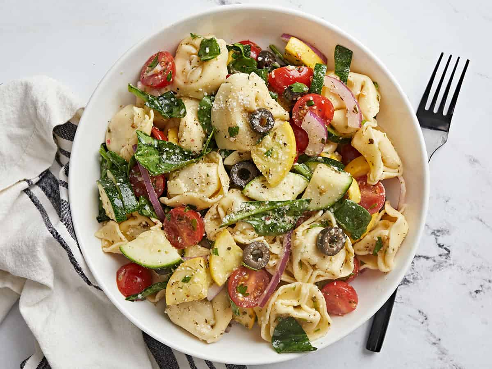

TORTELLINI SALAD

Description
This fresh, vibrant, and utterly delicious Tortellini Salad feeds a crowd on a dime.
My favorite part? It only takes a few minutes to put together.
Plus, you can make it ahead of time and store it in the fridge for up to 3 days.
Win! Win! Win! It’s perfect for picnics, potlucks, or a light lunch at home.
Get ready to put this Tortellini Salad recipe on repeat!
Ingredients
- summer squash ($1.10)
- 1 zucchini ($0.75)
- 1/2 tsp salt ($0.02)
- pint cherry tomatoes ($3.00)
- 1/2 red onion ($0.38)
- 2 cups fresh baby spinach, packed ($1.49)
- 1/2 cup sliced black olives ($1.99)
- 3/4 cup Italian dressing ($1.42)
- 1/2 cup chopped Italian Parsley ($0.30)
- 1/4 cup Parmesan cheese ($0.33)
- 1 lb cheese tortellini ($4.79)
Steps
- First, cook the tortellini according to the package directions. Then drain well and cool in a very large bowl in the fridge.
- While the tortellini is cooking, slice the summer squash and the zucchini into 1/4-inch rounds and then quarter the rounds. Add them to a large bowl and sprinkle with salt and mix.
- Slice the cherry tomatoes in half. Slice the red onion in 1/4 inch half moons and soak it in cold water to dull its sharp flavor. Chop the parsley, and if the baby spinach leaves are large, chop them as well.
- Once the tortellini has cooled, top it with the cherry tomatoes, red onion, zucchini, squash, baby spinach, and sliced black olives. Then drizzle with 1/2 cup of Italian dressing.
- Next, top the salad with chopped Italian parsley and Parmesan cheese. Then drizzle with the final 1/4 cup of Italian dressing. Finally, mix, and serve! Wasn't that easy?